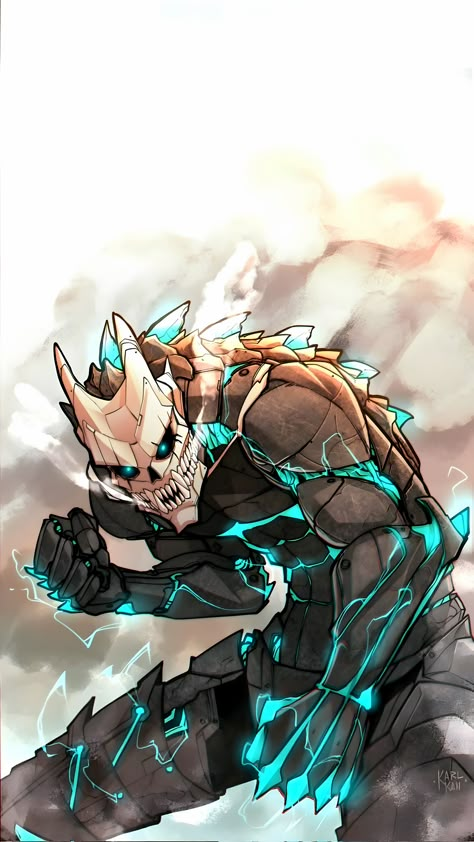
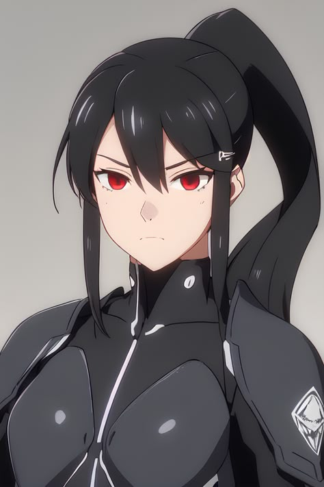
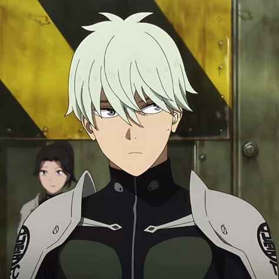
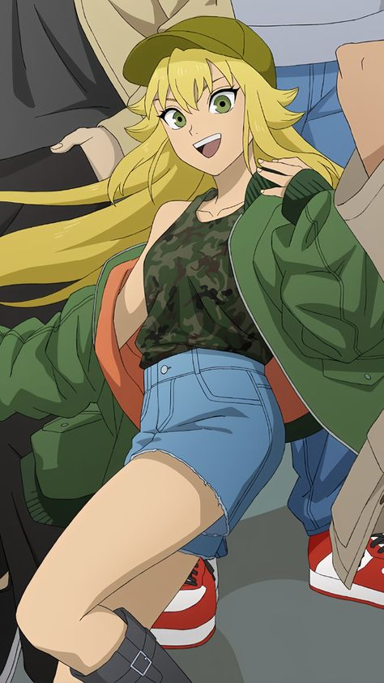

Kaiju No. 8
Released: April 13, 2024
Genre: Action, Sci-Fi, Military, Supernatural
In a world constantly under threat by giant monsters known as Kaiju, Japan's Defense Force battles daily to protect civilians. Kafka Hibino, a man who cleans up Kaiju remains, once dreamed of joining the elite fighting squad but failed.
After a bizarre incident grants him the ability to transform into a Kaiju himself, Kafka gets a second chance to fight — this time as humanity’s secret weapon and biggest threat rolled into one.
Cast

Kafka Hibino
Voice: Masaya Fukunishi

Mina Ashiro
Voice: Asami Seto

Reno Ichikawa
Voice: Wataru Katō

Kikoru
Voice: Fairouz Ai